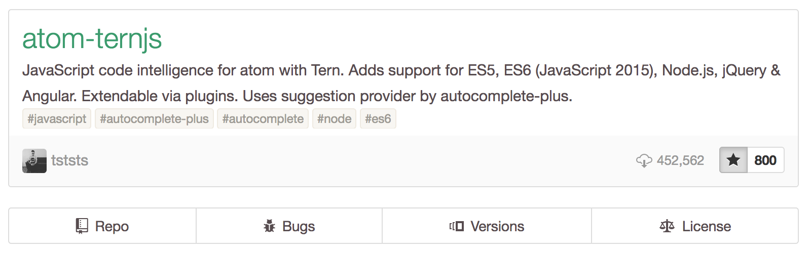

Selon que tu sois d√©butant¬∑e ou confirm√©¬∑e, il y aura une mani√®re d’installer Node qui te correspond.
Ce chapitre contient tout ce qu’il faut savoir pour utiliser Node sur notre ordinateur et se pr√©parer √† d√©velopper notre premier programme.
-
Installer Node.js sur son ordinateur
-
Choisir un éditeur de code pour écrire nos programmes
-
Déterminer quand migrer vers une nouvelle version de Node.js
Nous avons vu dans le premier chapitre que Node est un environnement d’ex√©cution JavaScript.
Certains syst√®mes d’exploitation embarquent l’environnement d’ex√©cution Node. D’autres ne le font pas. Et d’autres embarquent Node mais dans une version trop ancienne. Voire avec une configuration exotique dont il est difficile de conna√Ætre les tenants et aboutissants. Id√©alement, on voudrait pouvoir installer la version de Node de notre choix sur notre ordinateur.
Les √©diteurs de code nous facilitent la vie en rendant le code lisible en ajoutant de la couleur et des rep√®res visuels. Ces logiciels nous invitent √† piocher dans leur biblioth√®que d’extensions pour en faire un outil qui nous ressemble.
|
üí¨
|
Remarque Versions de Node et npm
Le contenu de ce chapitre utilise les versions Node v8 et npm v5. Ce sont les versions stables en 2018. |
Il n’est pas n√©cessaire d’avoir suivi des √©tudes d’informatique pour vouloir s’essayer √† la programmation. S’essayer √† la programmation n’implique pas non plus d’en faire son m√©tier.
Que l’on se qualifie de personne d√©butante, confirm√©e ou experte, il y a un petit rituel auquel on coupera difficilement :
-
installer Node.js pour voir le résultat de nos programmes écrits en JavaScript ;
-
installer un éditeur de code pour écrire nos programmes JavaScript plus confortablement.
Si l’id√©e est de jouer avec du code rapidement, sans rien installer et avec le premier ordinateur qui vous passe sous la main, je vous invite √† aller directement √† la section Sans installation, dans un navigateur web ci-apr√®s.
Les sections qui suivent ont pour intention de vous aider √† cr√©er un environnement Node √† jour sur votre ordinateur. Ce contenu s’applique √©galement √† un serveur destin√© √† h√©berger vos applications Node.
1. Installer Node.js
Il y a plusieurs mani√®res d’installer Node sur une machine. Elles sont toutes correctes. Certaines mani√®res sont plus adapt√©es que d’autres, selon votre aisance avec un terminal et selon le besoin de jongler rapidement entre diff√©rentes versions de Node.
-
si vous ne vous √™tes jamais servi¬∑e d’un terminal : il est plus simple d’utiliser un installeur depuis le site officiel de Node ;
-
si vous designez ou d√©veloppez : il est plus simple d’utiliser nvm (voir section ci-apr√®s) ;
-
si vous souhaitez maitriser les options d’installation : il serait logique de compiler depuis les sources et/ou d’utiliser Docker ;
-
si rien de tout ça ne vous parle : des services en ligne rendent Node accessible depuis un simple navigateur web.
|
üí¨
|
Question Pourquoi utiliser un installeur ?
Les installeurs permettent d’installer Node facilement, en quelques clics et sans toucher √† un terminal. Si vous utilisez un installeur correspondant √† une version plus r√©cente de Node, cette nouvelle version sera utilis√©e dans tous vos projets Node. C’est la solution la plus simple pour installer Node. |
1.1. Sans installation, dans un navigateur web
Il est facile de s’essayer √† Node juste avec un navigateur web moderne comme Firefox, Microsoft Edge ou Chrome. Des services en ligne combinent un √©diteur de texte ainsi qu’un environnement d’ex√©cution Node √† distance.
Nous brosserons le portrait de 3 services différents de part leurs fonctionnalités et leur rapidité de prise en main : RunKit, Codenvy et Cloud9.
RunKit (runkit.com) est de loin le service le plus simple. Il s’articule autour d’un concept de bac √† sable, notre code ne sera pas plus long qu’un fichier. Pour cr√©er un nouveau bac √† sable, il suffit de se rendre sur runkit.com/new.
Codenvy (codenvy.io) est un service basé sur le
logiciel open source Eclipse et édité par la compagnie Red Hat.
L’interface est organis√©e exactement comme un des √©diteurs de texte abord√© plus loin dans ce chapitre.

Le processus de cr√©ation de projet est relativement intuitif et il est tr√®s facile d’importer du code h√©berg√© en ligne, sur GitHub notamment. La configuration minimale d’un projet est gratuite tandis que les fonctionnalit√©s avanc√©es et le travail en √©quipe sont payantes.

Enfin, Cloud9 (c9.io) est un service propriétaire
édité par la compagnie Amazon Web Services (AWS, aws.amazon.com).
Ce service intègre des fonctionnalités similaires à celles de Codenvy
(éditeur en ligne, configuration de machine)
et s’int√®gre de mani√®re pouss√©e avec les autres services d'AWS,
dont EC2 et Lambda (voir le chapitre 6).
Le service est entièrement gratuit.
C’est la consommation de ressources qui est payante, √† l’heure,
en fonction du dimensionnement des ressources demandées.
Cloud9 a peu d’opinions sur la mani√®re dont votre environnement doit √™tre configur√©. Tout devra √™tre configur√©, des acc√®s √† votre compte GitHub jusqu’√†‚Ķ la version de Node √† installer.

Ça tombe bien, nvm est préinstallé sur chaque espace de travail.
1.2. Plusieurs versions sur la même machine (nvm)
nvm est l’acronyme de Node Version Manager.
Ce logiciel permet d'installer plusieurs versions de Node sur un même ordinateur.
Si vous √™tes sous Windows, l’alternative nvm-windows offrira exactement les m√™mes fonctionnalit√©s (voir encadr√© ci-apr√®s).
Si vous venez d’un autre univers de programmation, nvm est l’√©quivalent de rbenv dans le monde Ruby, de phpenv dans le monde PHP ou encore de virtualenv pour Python.
Le programme s’obtient √† cette adresse : github.com/creationix/nvm.
|
üí°
|
Alternatives nvm pour Windows
nvm ne fonctionne pas sur les ordinateurs équipés de Windows. Il existe trois autres alternatives : nvm-windows, _nvmw et nodist. nvm-windows offre les mêmes fonctionnalités que son équivalent pour Linux et macOS nvm. Il est facile à installer et ne demande pas de privilège système particulier pour fonctionner. Deux autres alternatives sont à essayer si nvm-windows pose problème : |
curl -L https://github.com/creationix/nvm/raw/v0.33.8/install.sh | bash|
üí°
|
Alternative nvm sous macOS
nvm et Node peuvent s’installer encore plus facilement sous macOS si vous utilisez le logiciel Homebrew. Rendez-vous dans la section macOS pour en savoir plus. |
Une fois install√©, vous serez libre d’installer les versions exactes de Node qui vous int√©ressent en appelant la commande nvm dans un terminal.
nvm installnvm install v8
nvm alias default v8Dans l’exemple pr√©c√©dent, la premi√®re ligne est responsable de l'installation de la version de Node la plus r√©cente dans la branche 8.x. La deuxi√®me ligne est quant √† elle responsable de signaler que l’on veut en faire notre version par d√©faut sur cet ordinateur.
On pourra retrouver à tout moment les versions installées en utilisant la commande nvm ls.
nvm lsnvm ls
-> v8.9.4
v9.3.0
system
default -> v8 (-> v8.9.4)
node -> stable (-> v9.3.0) (default)
stable -> 9.3 (-> v9.3.0) (default)
lts/* -> lts/carbon (-> v8.9.4)
lts/argon -> v4.8.7 (-> N/A)
lts/boron -> v6.12.3 (-> N/A)
lts/carbon -> v8.9.4L’exemple pr√©c√©dent d√©taille 2 choses :
-
la liste des versions de Node installées sur le système ;
-
la liste des alias, et à quelle version de Node ils correspondent.
Taper nvm use stable nous fera basculer vers la branche 9.3.
C’est l’√©quivalent de saisir nvm use v9.3.0 ou nvm use v9 si on a la flemme de tout √©crire.
De même, taper nvm use default ou nvm use v8 nous fera basculer vers la branche la version v8.9.4.
Vous pouvez saisir la commande nvm --help √† tout moment pour obtenir de l’aide sur la syntaxe des commandes.
J’utilise principalement ces commandes :
-
nvm install: installe ou met à jour une version de Node ; -
nvm ls: liste les versions installées de Node ; -
nvm use: bascule vers une version donnée de Node ; -
nvm alias <nom> <version>: crée un alias nommé vers une version de Node ; -
nvm run <version> <script>: exécute un script Node dans une version donnée de Node.
1.3. Distributions Linux : Debian/Ubuntu et RedHat/CentOS
Les distributions Linux et Debian listent Node dans leurs paquets officiels.
Un simple apt-get install nodejs et ça fonctionne !
‚Ķ Ou presque : bien souvent on √©copera d’une vieille version de Node.
Des paquets officiels pour Debian, Ubuntu, Mint, RedHat Enterprise Linux (RHEL) et CentOS sont maintenus sur github.com/nodesource/distributions.
L’installation de node 8.x sous Ubuntu et Mint devient aussi simple que les deux commandes suivantes :
curl -sL https://deb.nodesource.com/setup_8.x | sudo -E bash -
sudo apt-get install -y nodejsPour Debian, il faudra se mettre en root et ensuite saisir ces commandes :
curl -sL https://deb.nodesource.com/setup_8.x | bash -
apt-get install -y nodejsPour RHEL et CentOS, il faudra se mettre en root et saisir cette commande :
curl -sL https://rpm.nodesource.com/setup_8.x | bash -1.4. Distributions Linux : les autres
Des paquets officiels pour d’autres distributions que Debian, Ubuntu et Mint sont maintenus et accessibles par le biais des gestionnaires de paquets habituels :
-
Gentoo :
emerge nodejs -
Ubuntu >= 12.04, Debian >= jessie, Mint : voir ci-après
-
Fedora >= 18 :
sudo yum install nodejs npm -
Red Hat Enterprise et CentOS :
sudo yum install nodejs npm --enablerepo=epel -
Arch Linux :
pacman -S nodejs -
FreeBSD, OpenBSD :
pkg install node
La liste à jour est maintenue sur cette page du site officiel de Node nodejs.org/fr/download/package-manager.
√Ä noter que vous pouvez aussi utiliser nvm pour g√©rer vos versions de Node ind√©pendamment du cycle de vie de votre syst√®me d’exploitation Linux.
1.5. macOS
Un installeur officiel pour macOS est fourni sur le site de Node √† l’adresse nodejs.org/fr/download/.
nvm est la voie alternative recommandée pour gérer plusieurs versions de Node en parallèle.
Il est toutefois possible d’installer Node et nvm via le gestionnaire de paquets Homebrew. Homebrew (brew.sh/) est un logiciel open source populaire. Il aide √† installer des logiciels qui ne sont pas distribu√©s via le Mac App Store.
L’installation de Homebrew se fait en deux √©tapes :
-
l’installation des Command Line Tools pour compiler des logiciels depuis leur code source ;
-
l’installation de Homebrew en elle-m√™me.
xcode-select --install
BREWRL=https://raw.githubusercontent.com/Homebrew/install/master/install \
/usr/bin/ruby -e "$(curl -fsSL $BREWRL)"Pour installer nvm, il suffira alors de faire :
brew install nvmOu pour installer une seule version de Node, la plus récente :
brew install nodeVous pouvez obtenir des options d’installations et de configuration en tapant brew info nvm et/ou brew info node.
1.6. Windows
Un installeur officiel pour Windows est fourni sur le site de Node √† l’adresse nodejs.org/fr/download/.
nvm-windows est la voie alternative recommandée pour gérer plusieurs versions de Node en parallèle.

L’installeur officiel cr√©era plusieurs raccourcis dans le dossier Node.js du menu D√©marrer :

Le menu cr√©√© par l’installeur contient deux ic√¥nes que nous utiliserons tout au long de la lecture de cet ouvrage :
-
Node.js : un terminal pour jouer avec JavaScript et voir les résultats que Node va interpréter ;
-
Node.js command prompt : un terminal pour exécuter nos programmes écrits en JavaScript.
Si vous utilisez d√©j√† un gestionnaire de paquet comme Scoop (scoop.sh/) ou Chocolatey (chocolatey.org/), le chemin d’installation vers Node s’en trouvera r√©duit √† une simple commande :
# Avec Scoop
scoop install nodejs
# Avec Chocolatey
choco install nodejs|
üö®
|
Attention Versions supportées de Windows
Node n’est pas compatible avec les versions ant√©rieures √† Windows Vista. Cela inclut Windows XP. Mieux vaudra utiliser un service en ligne pour essayer Node en toute s√©curit√© sur votre ordinateur‚Ķ ou passer √† Linux pour lui redonner une seconde vie en toute s√©curit√© ! |
1.7. Raspberry Pi
Des binaires sont disponibles pour les microcontr√¥leurs fonctionnant avec des processeurs ARMv6, ARMv7 et ARMv8. Ces microcontr√¥leurs sont au c≈ìur de ce que l’on appelle Internet des Objets (Internet of Things, IoT). Ces petits ordinateurs consomment peu d’√©nergie, disposent d’une connectique pour se relier √† Internet et s’interfacent avec toutes sortes de capteurs.
Un paquet deb est √©galement propos√© pour les utilisateurs du syst√®me d’exploitation Raspbian (www.raspbian.org/).
Les instructions d’installation sont identiques √† celles d√©crites
dans la section précédente relative aux distributions Linux : Debian et Ubuntu.
curl -SLO https://nodejs.org/dist/v8.9.4/node-v8.9.4-linux-arm64.tar.xz
tar -xJf "node-v8.9.4-linux-arm64.tar.xz" -C /usr/local --strip-components=1
ln -s /usr/local/bin/node /usr/local/bin/nodejsTous les binaires et les instructions d’installation sont disponibles sur nodejs.org/fr/download/.
1.8. Compiler depuis les sources
Certaines situations exigeront que vous compiliez Node. C’est le cas si vous cherchez √† travailler au plus pr√®s du syst√®me sur lequel vous comptez d√©ployer vos applications Node. Je pense par exemple √† des architectures processeur ARM, PowerPC, IBM System/390 ou bien √† des syst√®mes Android, OpenBSD ou AIX.
La compilation manuelle est √©galement int√©ressante pour r√©gler plus finement certains aspects grand public de Node : rendre le binaire ind√©pendant des librairies syst√®me (statique), le module http/2, les langues et fuseaux horaires fonctionnelles avec l’API ECMA 402 Intl, les options de s√©curit√© li√©es √† OpenSSL, mais aussi l’int√©gration avec des profileurs et d√©bogueurs externes (type XCode, GNU Debugger, Intel VTune).
curl -sS https://nodejs.org/dist/v8.9.4/node-v8.9.4.tar.gz \
| tar -zxf -
cd node-v8.9.4
./configure && make && make installLa compilation manuelle requiert la présence de GCC 4.9+, de Python 2.6+ et de GNU Make 3.81+.
Les instructions de compilation varient d’un syst√®me d’exploitation √† l’autre.
Consultez les dépendances et instructions complètes à
cette adresse github.com/nodejs/node/blob/master/BUILDING.md.
1.9. Images Docker
Docker (docker.com) est un outil open source dit d'applications en conteneur. Une de ses qualit√©s principales est d'isoler l’ex√©cution d’applications de leur environnement d’ex√©cution. Une image Docker d√©crit la recette d’installation d’une application. L’environnement d’ex√©cution Docker fait office de passe-plat avec le syst√®me d’exploitation. Une image Docker fonctionne ainsi de la m√™me mani√®re qu’elle soit ex√©cut√©e sous Linux, macOS ou encore Windows.
Les installeurs et instructions d’installation de Docker se trouvent √† l’adresse docker.com/community-edition.
Une fois Docker installé, on peut exécuter une image officielle pour Node 8.x :
docker run -ti --rm node:8 node --version
v8.9.4Docker t√©l√©charge l’image node:8 et ex√©cute la commande node --version dans un contexte isol√© du syst√®me d’exploitation.
Pour lancer un terminal Node dans Docker, il faudrait saisir cette commande :
docker run -ti --rm node:8 node
2+2
4Plusieurs variantes par version de Node se trouvent à notre disposition :
- standard (
node:8) -
base Linux Debian pour tout type d’applications Node ;
- Debian (
node:8-wheezy) -
idem que standard mais sur des bases Debian différentes, comme Wheezy, Stretch, etc. ;
- Alpine (
node:8-alpine) -
distribution spécialement créée pour Docker (alpinelinux.org) — elle pèse quelques Mo à peine ;
- allégée (
node:8-slim) -
base Linux Debian sans outillage parfois n√©cessaires √† des modules Node ‚Äî utile si vous souhaitez √©conomiser de l’espace disque.
L’int√©gralit√© des versions et architectures support√©es est disponible sur le Docker Hub : hub.docker.com/_/node/.
Nous nous repencherons sur Docker dans la section déploiement immutable du Chapitre 6.
2. Utiliser Node.js avec un terminal (shell)
La section pr√©c√©dente nous a permis d’installer l’environnement d’ex√©cution Node sur notre machine. Il se peut aussi que vous ayez privil√©gi√© l’utilisation d’un service en ligne.
Nous allons nous assurer dans cette section que nous pouvons voir nos premiers r√©sultats d’une interaction avec Node.
Le terminal est notre compagnon pour dialoguer avec le syst√®me d’exploitation. L'invite de commande est son nom v√©ritable. Ce nom nous donne un indice sur la fonction de ce type de logiciel : inviter l’utilisateur √† saisir des commandes pour obtenir des r√©sultats calcul√©s par un ordinateur.
|
üí¨
|
Histoire Terminal physique
L’histoire des invites de commande remonte au temps où les ordinateurs √©taient plus volumineux que nos logements. Une √©poque lointaine où les ordinateurs √©taient v√©ritablement et physiquement distants des claviers qui les interrogeaient. |
Une application de type terminal sert également à communiquer avec Node quand celui-ci est installé sur un ordinateur.
La majorit√© des syst√®mes d’exploitation embarquent un logiciel utilitaire permettant d’ouvrir un terminal. Cela vaut √©galement pour les services en ligne offrant la fonctionnalit√© d'√©diteur de code.
Voici une liste non exhaustive d’applications de type terminal :
- macOS
-
-
Terminal.app : fourni par défaut (dans
Applications / Utilitaires) ; -
iTerm2 : une version améliorée disponible sur iterm2.com (ou
brew cask install iterm2) ;
-
- Linux
-
-
GNOME Terminal : fourni par défaut sous Debian, Ubuntu et les distributions utilisant le bureau GNOME (wiki.gnome.org/Apps/Terminal) ;
-
Terminator : un autre terminal populaire (gnometerminator.blogspot.com) ;
-
- Windows
-
-
Node.js Command Prompt : fourni avec l'installeur Windows ;
-
PowerShell : fourni par défaut depuis Windows 7, sinon disponible sur github.com/PowerShell/PowerShell — également disponible pour macOS et Linux.
-
Maintenant que nous avons install√© Node et compris comment y acc√©der depuis notre syst√®me d’exploitation ou navigateur web, attaquons-nous au dernier morceau du puzzle : avec quel logiciel √©crire du code JavaScript pour nos applications Node ?
3. Choisir un éditeur de texte
Programmer pour Node revient dans la majorit√© des cas √† √©crire du JavaScript. √Ä cela s’ajoutent le HTML et le CSS dans le cas d’applications ou de sites web.
√Ä la base, si un √©diteur de texte suffit pour √©crire du code, prenons le temps de regarder ce qui pourrait nous apporter un peu de confort dans le processus d’√©criture.
Les logiciels pr√©sent√©s ci-apr√®s couvrent bon nombre de fonctionnalit√©s qui am√©liorent de pr√®s ou de loin notre capacit√© √† √©crire du code de qualit√©. Parmi ces fonctionnalit√©s, on peut retrouver la coloration syntaxique, l’inspection dynamique, le d√©bogage, des astuces de productivit√© et d’int√©gration √† l’√©cosyst√®me Node.
Cette s√©lection a pour intention de vous aider √† piocher au plus pr√®s de vos go√ªts. Le meilleur logiciel sera celui qui vous plaira. Rien n’emp√™che d’en changer par la suite.
3.1. Atom

Atom (atom.io) est un √©diteur de code open-source, multilingue et multi plate-forme dont le d√©veloppement a √©t√© initi√© par la soci√©t√© commerciale GitHub (github.com). Le logiciel est bas√© sur Electron, un environnement d’ex√©cution d’applications de bureau reposant sur les technologies web et‚Ķ sur Node !
Atom offre un √©cosyst√®me d’extensions pour √©tendre les fonctionnalit√©s de l’√©diteur. On retrouvera des extensions d√©di√©es √† l’auto-compl√©tion, un d√©bogueur Node int√©gr√© (pour ex√©cuter nos programmes sans changer de fen√™tre) mais aussi une v√©rification syntaxique sur mesure.
L’ensemble des extensions d'Atom sont disponibles sur atom.io/packages ; voici cependant une liste d’extensions que j’utilise au quotidien :
- minimap (atom.io/packages/minimap)
-
Une pr√©visualisation de l’int√©gralit√© du code source d’un fichier.
- file-icons (atom.io/packages/file-icons)
-
Une manière plus agréable de visualiser les différents types de fichiers en fonction de leur icône.
- pigments (atom.io/packages/pigments)
-
Affiche les couleurs en marge et dans le code source.
- language-babel (atom.io/packages/language-babel)
-
Coloration syntaxique de tous les langages compris par l’outil Babel (babeljs.io) ; dont les versions modernes de JavaScript, JSX, GraphQL, etc.
- emmet (atom.io/packages/emmet)
-
G√©n√®re du HTML √† partir d’une √©criture sous forme de s√©lecteur CSS.
- linter-eslint (atom.io/packages/linter-eslint)
-
Vérification syntaxique basée sur les règles projet du module ESLint (eslint.org, voir l'annexe A, eslint).
- atom-ternjs (atom.io/packages/atom-ternjs)
-
Autocompl√©tion pour JavaScript, Node et d’autres librairies populaires comme jQuery, chai et underscore.
- editorconfig (atom.io/packages/editorconfig)
-
Adapte les r√©glages d’indentation et autres styles d’√©criture de code document√©s dans chaque projet.
- language-sass (atom.io/packages/language-sass)
-
Support du langage Sass.
- markdown-writer (atom.io/packages/markdown-writer)
-
Raccourcis et aides pour formatter du texte au format Markdown.
- autocomplete-modules (atom.io/packages/autocomplete-modules)
-
√âtend l’autocompl√©tion lors des appels aux modules npm (voir Chapitre 5).
- linter-sass-lint (atom.io/packages/linter-sass-lint)
-
Vérification syntaxique des fichiers Sass.
- node-debugger (atom.io/packages/node-debugger)
-
Intégration du débogueur Node.
- tablr (atom.io/packages/tablr)
-
Éditeur de fichiers CSV.
- linter-markdown (atom.io/packages/linter-markdown)
-
Vérification syntaxique des fichiers Markdown.
- node-resolver (atom.io/packages/node-resolver)
-
Navigation au sein des modules npm en cliquant sur leurs méthodes ou propriétés.
|
üí°
|
Productivité Installer vos extensions favorites
Chaque extension peut √™tre ajout√©e √† nos favoris sur le site atom.io. L’intention peut √™tre de signaler notre appr√©ciation d’une extension mais aussi de retrouver plus tard celles qui nous plaisent.

Figure 11. Une extension Atom ajoutée aux favoris.
Et ça tombe bien, le logiciel nous offre une commande à saisir dans un terminal pour installer toutes les extensions ajoutées à nos favoris ! |
3.2. Visual Studio Code

Visual Studio Code (code.visualstudio.com) est un √©diteur de code open-source, multilingue et multi plate-forme dont le d√©veloppement a √©t√© initi√© par la soci√©t√© Microsoft. Le logiciel est bas√© sur Electron, un environnement d’ex√©cution d’applications de bureau reposant sur les technologies web et‚Ķ sur Node !
Le syst√®me IntelliSense est un de ses atouts principaux. Il se sert du contexte disponible pour offrir une auto-compl√©tion et des bulles d’aide pertinentes. C’est un √©diteur parfaitement adapt√© au d√©veloppement d’applications Node gr√¢ce √† des fonctionnalit√©s natives comme l’ex√©cution, le d√©bogage, la gestion de t√¢ches et le versionnement ‚Äì du code et des modules npm.
Visual Studio Code offre √©galement un √©cosyst√®me d’extensions pour √©tendre les fonctionnalit√©s de l’√©diteur.
3.3. WebStorm

WebStorm (www.jetbrains.com/webstorm/) est un environnement de développement (IDE) payant dédié au développement Web
HTML5, JavaScript et Node.
Le logiciel est commercialisé par la société JetBrains.
Cette société est renommée pour ses IDE Pycharm (pour Python),
PhpStorm (pour PHP) et IntelliJ IDEA (pour Java).
WebStorm est compatible Windows, Linux et macOS. Ses forces r√©sident dans sa relative l√©g√®ret√©, une auto-compl√©tion intelligente prenant en compte la r√©solution des modules CommonJS et AMD, une int√©gration des outils populaires dans l’√©cosyst√®me Node (npm, eslint, Mocha, Karma, Bower, etc.) ainsi qu’un d√©bogage avanc√©.
Le t√©l√©chargement de WebStorm inclut une p√©riode d’essai de 30 jours. La tarification du produit varie selon que vous soyez un individu ou une entreprise et que le paiement se fasse mensuellement ou annuellement.
|
üí°
|
Astuce Licence open source.
Vous pouvez demander √† b√©n√©ficier d’une licence gratuite sous r√©serve d’une preuve de contribution √† un ou plusieurs projets open source. |
3.4. Visual Studio IDE
Visual Studio (www.visualstudio.com/vs/) est un environnement de d√©veloppement (IDE) √©dit√© par Microsoft. Visual Studio √©tait historiquement d√©di√© au d√©veloppement applicatif Windows (Visual Basic, Visual C++). Ce logiciel g√®re aujourd’hui bien plus de langages, dont C#, HTML, CSS, JavaScript, ASP.Net. Il est surtout extensible, ce qui permet de lui ajouter le support de Python ou encore Node, entre autres.
Visual Studio est compatible Windows uniquement. Il existe en plusieurs éditions dont la Community Edition. Cette édition est gratuite, elle.
Afin de b√©n√©ficier de l’int√©gration compl√®te de l’√©cosyst√®me Node, il est n√©cessaire d’installer l’extension Node.js Tools for Visual Studio (aussi nomm√©e NTVS). Elle est gratuite, open source et disponible √† cette adresse www.visualstudio.com/vs/node-js/.
4. Quand mettre à jour Node.js ?
Le développement de Node continue pendant que vous lisez ces lignes. Les sections suivantes présentent les différentes raisons pour lesquelles de nouvelles versions de Node sont distribuées.
Quelle que soit la raison, le processus de mise à jour est identique que pour l'installation de Node :
-
si vous aviez utilisé un installeur : téléchargez et installez-en la nouvelle version ;
-
si vous aviez utilisé un gestionnaire de version : téléchargez la nouvelle version et faites-en la nouvelle version par défaut ;
-
si vous aviez compilé depuis les sources : téléchargez les sources de la nouvelle version et compilez à nouveau ;
-
si vous aviez utilisé une image Docker : téléchargez la nouvelle version en ayant recourt à la commande
docker pull node:<version>.
4.1. Mises à jour de sécurité
Node n’est pas exempt de bugs. Il y a une cat√©gorie de bugs qui n√©cessite d’√™tre r√©actif : les failles de s√©curit√©. Ces failles offrent une surface d’attaque √† des personnes mal intentionn√©es. Elles seraient tent√©es d’acc√©der sans permission √† des serveurs, et donc aux donn√©es qu’ils contiennent.
L’impact peut √™tre faible pour un site perso‚Ķ √† condition de ne pas laisser trainer de mots de passe ici et l√†. Cela peut se r√©v√©ler beaucoup plus f√¢cheux pour un site e-commerce ou une entreprise dont la sant√© serait mise en jeu.
L’√©quipe de Node livre des versions corrigeant les failles de s√©curit√© aussit√¥t qu’elle le peut. La faille n’est d’ailleurs pas r√©v√©l√©e avant que le correctif soit disponible, par mesure de pr√©caution.
Que faire si la faille de sécurité affecte la version de Node installée sur :
-
notre ordinateur de d√©veloppement : c’est peu risqu√© - sauf √† ce qu’un module tiers exploite cette faille ;
-
notre site web : redéployer aussitôt le site en question avec une version corrigeant la faille.
Les versions de Node qui corrigent des failles de sécurité ou des bugs connus
n’ont quasiment aucune chance de casser une application existante.
On les appelle les versions patch.
Une version patch est, par exemple, lorsque la version actuelle
de Node est la v8.2.3 et que la nouvelle version est la v8.2.4.
Plusieurs ressources sont à notre disposition pour se tenir informé·e :
- Liste de diffusion (groups.google.com/group/nodejs-sec)
-
Pour recevoir l’alerte par email (moins d’un email par mois).
- Blog Node.js (nodejs.org/en/blog/vulnerability/)
-
Une page web à consulter avec un navigateur web. Les mêmes messages sont relayés sur la liste de diffusion mentionnée précédemment.
- Fil RSS du blog Node.js (nodejs.org/en/feed/vulnerability.xml)
-
La même chose que le point précédent mais auquel on peut souscrire avec un lecteur RSS comme Feedly ou Mozilla Thunderbird.
- Compte Twitter @nodesecurity (twitter.com/nodesecurity)
-
Annonce des informations liées à la sécurité générale de Node et de son écosystème.
|
üí¨
|
Lien Groupe de travail Node.js Security
Un groupe de travail veille √† maintenir et am√©liorer la s√©curit√© de Node. Ces personnes se chargent d’√™tre proactives dans la d√©tection de failles dans l’architecture de Node mais aussi dans l’int√©gration de code tiers, comme la brique OpenSSL ou le module npm. |
Le chapitre 6 décrit comment se maintenir à jour sur les alertes de sécurité de nos applications Node. Celles-ci peuvent être vulnérables du fait des modules npm dont elles sont dépendantes — en plus des vulnérabilités de Node.
4.2. Versions mineures
Les versions mineures de Node sont des versions qui ajoutent de nouvelles fonctionnalit√©s √† Node. Ces nouvelles fonctionnalit√©s n’ont quasiment aucune chance de casser une application existante.
Une version mineure est, par exemple, lorsque la version actuelle
de Node est la v8.2.3 et que la nouvelle version est la v8.3.0.
Les versions mineures sortent une petite dizaine de fois par an.
Une migration ne demande pas n√©cessairement d’investir beaucoup de temps pour adapter et tester nos applications Node.
Que faire en cas de sortie d’une version mineure sur :
-
notre ordinateur de d√©veloppement : on peut migrer si l’on veut tester ou b√©n√©ficier des nouvelles fonctionnalit√©s de cette version ;
-
notre site web : pas d’action imm√©diate requise ; on peut migrer si l’on veut b√©n√©ficier des nouvelles fonctionnalit√©s de cette version.
4.3. Versions majeures
Les versions majeures de Node sont des versions qui ajoutent de nouvelles fonctionnalités à Node. En revanche, ces versions peuvent être amenées à changer des comportements qui casseraient une application existante.
Une version majeure est, par exemple, lorsque la version actuelle
de Node est la v8.2.3 et que la nouvelle version est la v9.0.0.
Les versions majeures sortent 2 fois par an.
Une migration peut demander d’investir un certain temps pour adapter
et tester nos applications Node.
Que faire en cas de sortie d’une version majeure sur :
-
notre ordinateur de d√©veloppement : on cherchera √† prendre du temps pour tester nos applications sur cette version et s’assurer de leur bon fonctionnement ;
-
notre site web : pas d’action imm√©diate requise.
4.4. Comprendre le cycle de vie produit
Le d√©veloppement de la plate-forme Node prend soin de ne pas aller trop vite ni d’alt√©rer la stabilit√© des applications et des outils en fonctionnement. Il sort au maximum deux versions majeures par an. Parmi ces deux versions, une version majeure est support√©e √† long terme (Long Term Support, LTS).
La notion de version support√©e √† long terme (LTS) a √©t√© introduit pour donner un rep√®re de stabilit√©. On sait qu’on peut compter dessus sans se poser de question. Les versions qui ne sont pas support√©es √† long terme sont √† voir comme un coup d’essai, dans l’anticipation d’une migration vers une version suivante, support√©e √† long terme, elle.

|
üí¨
|
Lien Calendrier de sorties
Le calendrier des sorties de Node est tenu √† jour √† l’adresse ci-apr√®s. R√©f√©rez-vous √† ce calendrier pour des informations √† jour sur les prochaines versions et l’arr√™t de maintenance d’anciennes versions. |
Si on récapitule :
- Les versions impaires (v5, v7, etc.)
-
-
sont développées pendant neuf mois
-
ne sont pas maintenues au-delà
-
- Les versions paires (LTS, v8, etc.)
-
-
sont basées sur la version impaire précédente
-
sont développées pendant six mois
-
sont supportées LTS pendant dix-huit mois
-
basculent en maintenance pendant douze mois supplémentaires
-
ne sont pas maintenues au-delà
-
Les patchs de sécurité ne concernent que les versions en développement, supportées ou en maintenance.
Cette planification garantit une plate-forme et un ensemble de fonctionnalit√©s stables de mani√®re pr√©dictible, √† la fois pour les projets reposant sur Node mais aussi pour l’√©cosyst√®me de contributeurs de modules npm.
5. Conclusion
Nous sommes d√©sormais en mesure d’installer et mettre √† jour Node sur notre ordinateur. Nous savons aussi avec quel(s) logiciel(s) d√©velopper nos applications. Nous savons aussi où nous informer pour savoir quand faire nos mises √† jour, pour corriger des probl√®mes de s√©curit√© et b√©n√©ficier des nouvelles fonctionnalit√©s du langage.
Le prochain chapitre nous amènera à reprendre les bases du langage JavaScript en jouant avec le terminal Node. On découvrira également les différences entre JavaScript, ECMAScript et Node.